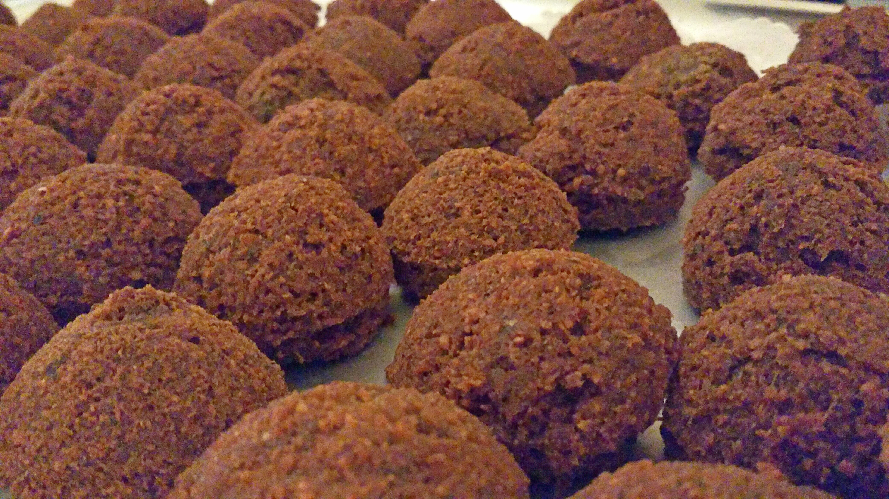

What is Falafel?
Originally falafel balls were made out of fava beans, chickpeas or some combination of both. These days, falafel balls are usually made out of chickpeas (also called garbanzo beans), but you can still find other variations depending on where you buy your falafel.
How falafel is made!!

The chickpeas are soaked, then ground up, and seasoned with onions, scallions and spices like parsley, garlic, cumin and coriander. Then, the mixture is shaped into balls and deep-fried in a large vat. The oil has to be hot enough so that when you drop the balls in, the outside gets nice and crispy and the inside doesn’t get too oily – a delicate balance that the best falafel makers have achieved.
Whats good about it
What’s great about falafel is that it’s a meatless option for vegetarians that is chock-full of nutrients like fiber, protein and folate. Chickpeas are also low in sodium and saturated fat. That’s not to say it’s as healthy as a green salad. Some falafel pitas can have as many as 750 calories, 30 grams of fat and a whopping 1500 milligrams of sodium. So it’s important to eat your falafel in moderation – and be aware of what toppings you're choosing and how they impact your calorie count.
Nutrition Information
One large ball (40 g), 103 Calories
| Carbs | Fat | Protein | Fiber |
|---|---|---|---|
| 6.7g | 6g | 3.6g | 4.8g |
Top Quotes About Falafel
I wanted to be the harbinger of ice cream, or falafel. - Author: Rick Riordan>
Sometimes,' says Bob, trying to eat a falafel and balance his glass at the same time. - Author: Elly Griffiths
TWENTY-NINE We Are Falafel-Jacked by an Eagle - Author: Rick Riordan